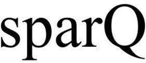

Trade Mark Journal No.2025/021 23 May 2025
WO0000001853183 (1,5)
Office of origin: United States of America
Date of International Registration:17 March 2025
Date of designation in the UK:
17 March 2025

International priority date claimed: 8 December 2024
(United States of America)
(98890822)
- Class 1
- Chemical, biochemical and biotechnological products for industrial and scientific purposes, namely, diagnostic preparations except for human or veterinary medical purposes; nonmedical reagents, enzymes and buffer solutions for scientific and/or medical research use, for sample preparation, modification and manipulation of cells and for marking, separating, isolating, purifying, duplicating, sequencing and/or for the analysis of biopolymers, in particular nucleic acids, proteins, macromolecules and biologically active substances, in particular reagents, enzymes and buffer solutions for nucleic acid purification, enrichment, amplification and sequencing; mineral coated particles, artificial and synthetic resins in the form magnetic or superparamagnetic particles, for use in isolating nucleic acids or proteins; kits comprising chemicals for sample preparation, modification and manipulation of cells; kits comprising chemicals for marking, separating, isolating, purifying, duplicating, sequencing and/or for the analysis of biopolymers, in particular nucleic acids, proteins, macromolecules and biologically active substances, in particular nucleic acids of biological or biochemical sample material; kits comprising in particular chemicals for reagents, enzymes and buffer solutions for nucleic acid purification, enrichment, amplification and sequencing.
- Class 5
- Diagnostic preparations for medical purposes; diagnostic preparations for veterinary purposes; diagnostic preparations for humans for medical purposes; preparations for medical and veterinary purposes, in particular diagnostics, for sample preparation, modification and manipulation of cells and for marking, separating, isolating, purifying, duplicating, sequencing and/or for the analysis of biopolymers, in particular nucleic acids, proteins, macromolecules and biologically active substances, in particular reagents, enzymes and buffer solutions for nucleic acid purification, enrichment, amplification and sequencing; mineral coated particles, artificial and synthetic resins in the form magnetic or superparamagnetic particles, for use in isolating nucleic acids or proteins; chemical, biochemical and biotechnological preparations, in particular reagents, enzymes and buffer solutions for sample preparation, modification and manipulation of cells and for marking, separating, isolating, purifying, duplicating, sequencing and/or for the analysis of biopolymers, in particular nucleic acids, proteins, macromolecules and biologically active substances, in particular reagents, enzymes and buffer solutions for nucleic acid purification, enrichment, amplification and sequencing; kits containing preparations for medical and veterinary diagnostic purposes, in particular for sample preparation, modification and manipulation of cells and for marking, separating, isolating, purifying, duplicating, sequencing and/or for the analysis of biopolymers, in particular nucleic acids, proteins, macromolecules and biologically active substances, in particular reagents, enzymes and buffer solutions for nucleic acid purification, enrichment, amplification and sequencing.
Quantabio, LLC
Representative: Randolph E. Digges, III Rankin, Hill & Clark LLP, P.O. Box 1150, Bonita Springs FL 34133-1150, UNITED STATES OF AMERICA